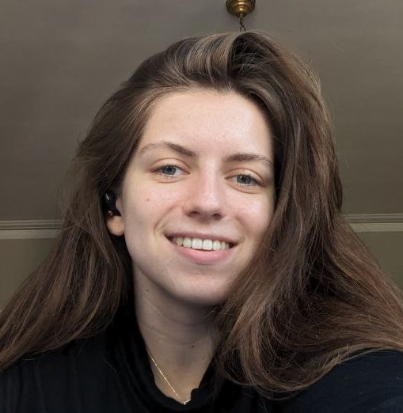

Katia Arshinova
Hello! I'm a first year PhD student at Boston University, advised by Kyle Deeds and John Liagourios. Currently I'm working on an MPC database engine.
In my free time, I am amateuring at gymnastics, painting, and road tripping.

Hello! I'm a first year PhD student at Boston University, advised by Kyle Deeds and John Liagourios. Currently I'm working on an MPC database engine.
In my free time, I am amateuring at gymnastics, painting, and road tripping.